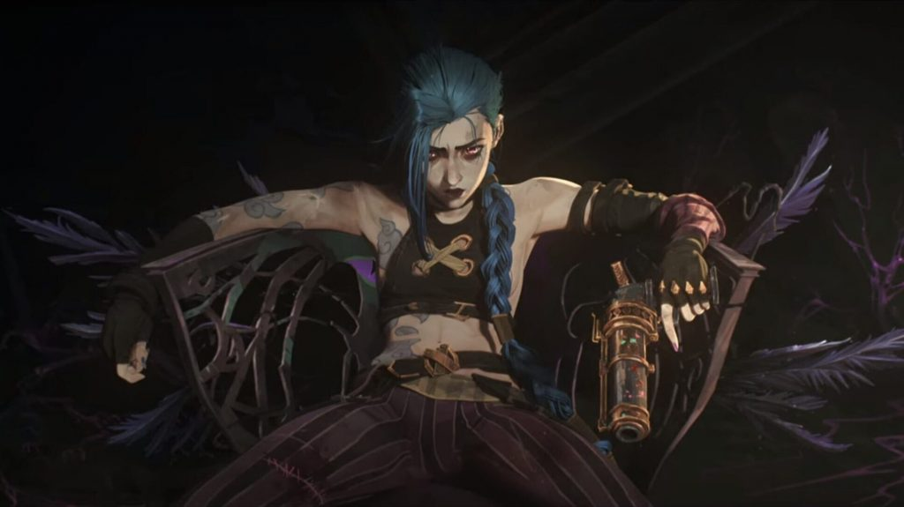

Jinx
Khẩu pháo nổi loạn
Dù ai cũng biết Jinx là một cô gái điên loạn với hàng tấn vũ khí nguy hiểm, chẳng mấy người nhớ được rằng cô đã từng là một cô bé tương đối ngây thơ đến từ Zaun - một thợ hàn luôn có những ý tưởng lớn lao nhưng chẳng bao giờ hợp lý. Chẳng ai biết rõ chuyện quái gì đã biến cô gái trẻ trung đáng yêu đấy trở thành một con người thất thường, khét tiếng với những hành vi phá hoại kinh hoàng. Nhưng một khi Jinx đã vác đống thuốc nổ đến Piltover, tài năng gây hỗn loạn thiên bẩm của cô đã ngay lập tức biến cô trở thành một huyền thoại tại đây.
Jinx lần đầu gây được sự chú ý bằng những trò đùa nặc danh đối với các cư dân Piltover… đặc biệt là mấy tay có liên quan đến những đoàn thương gia giàu có. Mấy trò đùa ấy trải rộng từ chỗ phiền phức khó chịu cho đến nguy hiểm chết người. Cô ta từng chặn mấy con đường ngay trong Ngày Tiến Bộ, bằng một đám thú ngoại lai xổng ra từ gánh xiếc của lão Bá Tước Mei. Cô cũng từng khiến giao thương ngừng trệ hàng tuần liền bằng cách treo những quả lựu đạn ma hỏa bé bé xinh xinh ngay trên cây cầu nổi tiếng của thành phố. Một lần khác, cô thậm chí đã có thể chuyển tất cả những biển báo giao thông sang chỗ mới, gây ra sự nhầm lẫn và hỗn loạn trong cả khu phố.
Dù mục tiêu của những trò quậy phá mà cô gây ra thường là ngẫu nhiên, và động cơ của cô cũng chẳng có gì ngoài tạo ra sự hỗn loạn, nhưng mọi hành động của cô đều khiến cho cuộc sống nhộn nhịp nơi thành phố trở nên đình trệ.
Theo lẽ tự nhiên, cục cảnh vệ cho rằng một số trò quậy phá kia là do đám hóa-tặc từ thành phố ngầm. Để người khác cướp công trong những phi vụ thiên tài của mình không phải là việc mà Jinx thích làm, nên cô đã đảm bảo rằng mình sẽ có mặt ngay tại hiện trường trong những vụ tiếp theo. Những lời đồn đại nhanh chóng chỉ ra rằng có một cô gái Zaun bí ẩn, với mái tóc xanh, vác theo hàng đống thuốc nổ hóa kĩ, một khẩu súng phóng lựu hình cá mập, và một khẩu súng liên thanh. Dù vậy, các nhà cầm quyền đã bác bỏ những báo cáo này, cho rằng chúng là chuyện vô lý. Dẫu sao, đám băng đảng thấp kém sao lại có được cả đống vũ khí nguy hiểm chết người như thế chứ?
Những trò đánh bom của Jinx dường như chẳng bao giờ dứt, trong khi cục cảnh vệ, mọi lần như một, bất lực trong việc vây bắt thủ phạm. Cô ta bắt đầu đánh dấu những nơi mình đã phá hủy bằng những bức vẽ graffiti màu mè, với những thông điệp khiêu khích trực tiếp đến đồng minh mới nhất của cảnh sát trưởng trong công cuộc chiến đấu tội phạm, Cảnh Binh Vi.
Danh tiếng của Jinx ngày càng được khẳng định, và điều đó khiến người dân ở Zaun chia làm hai quan điểm đối nghịch. Một bên xem cô là người hùng vì đã trừng phạt bọn người Piltover kiêu căng, bên còn lại thì xem cô là một kẻ tâm thần nguy hiểm bởi cô đang gia tăng những căng thẳng vốn có giữa hai thành phố.
Sau vài tháng với những cuộc bạo loạn ngày càng gia tăng, Jinx hé lộ kế hoạch lớn nhất của mình từ trước đến nay. Bằng màu mực hồng đặc trưng, Jinx vẽ lên những bức tường của Ngân Hàng Nhật Thực - một trong những kho bạc an toàn nhất thành phố - cùng với đó là một bức biếm hoa rất ư là xấu của Cảnh Binh Vi, và chi tiết ý định đánh cướp nơi này của mình.
Cảm giác chờ đợi, không dễ chịu chút nào, đè nặng lên cả Piltover và Zaun trong khi ngày vụ cướp dần đến gần. Nhiều người còn nghi ngờ rằng Jinx không dám ló mặt ra bởi điều đó gần như chắc chắn sẽ khiến cô bị bắt giữ.
Trong ngày vụ cướp diễn ra, Vi, Cảnh Trưởng Caitlyn, và cục cảnh vệ đã chuẩn bị sẵn một cái bẫy dành cho Jinx ngay bên ngoài kho bạc. Nhưng Jinx thì thật ra thì đã chui tọt vào trong từ vài ngày trước nhờ một thùng tiền ngoại cỡ đã được chuyển đến nơi đây. Khi Vi nghe thấy tiếng lộn xộn vang lên lên từ ngay bên trong tòa nhà, cô hiểu rằng cục cảnh vệ lại một lần nữa bị qua mặt. Cô nàng lao vào bên trong tòa nhà, và cuộc chạm trán giữa họ đã khiến Ngân Hàng Nhật Thực sau đó chỉ còn là một đống đổ nát, trong khi Jinx ma mãnh thì lại một lần nữa biến mất không dấu vết.
Hiện tại, Jinx vẫn nhởn nhơ ngoài kia, như một cái gai trong mắt phe Piltover. Những phi vụ của cô đã tạo cảm hứng cho hàng loạt tên tội phạm trong đám hóa-tặc, cũng như những chiêu trò công khai châm biếm sự vô dụng của cục cảnh vệ, và thậm chí là lan truyền những từ lóng mới ra khắp cả hai thành phố - dù thật ra cũng chẳng ai có đủ can đảm để gọi Cảnh Binh Vi là Hường-Sến-Súa ngay trước mặt cô ta cả.
Mục tiêu cuối cùng của Jinx, hay sự ám ảnh quá mức của cô với Vi, vẫn còn là một bí ẩn, nhưng có một thứ chắc chắn: những vụ phạm tội của Jinx đang vẫn đang tiếp diễn và ngày càng táo tợn hơn.